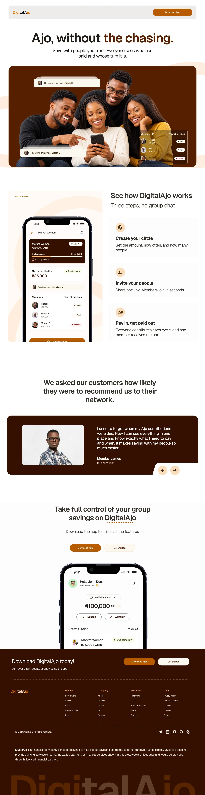
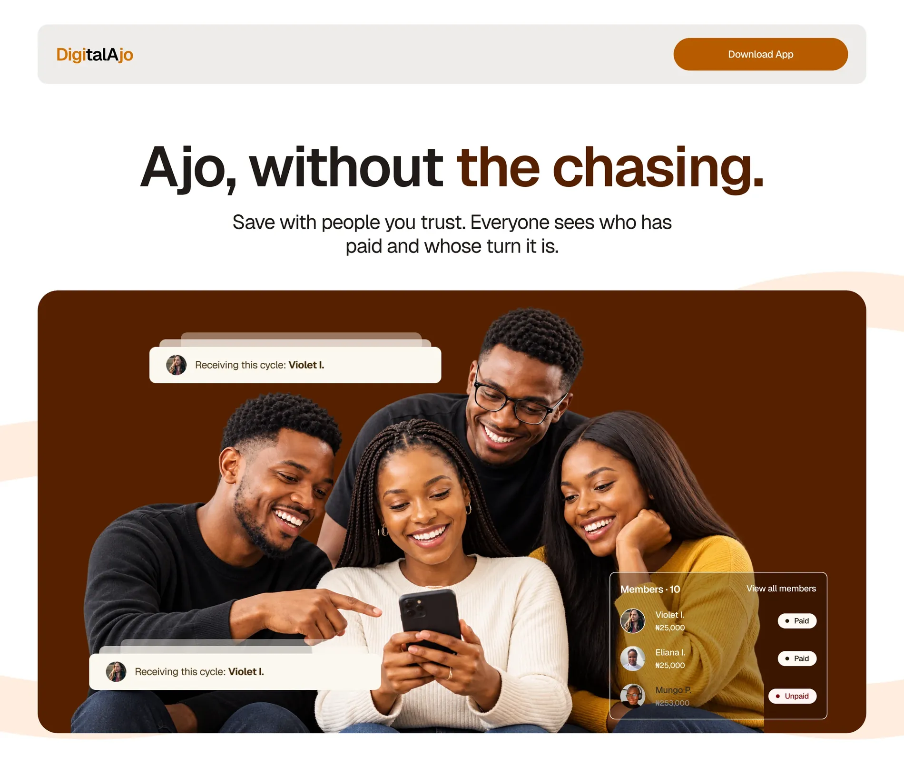
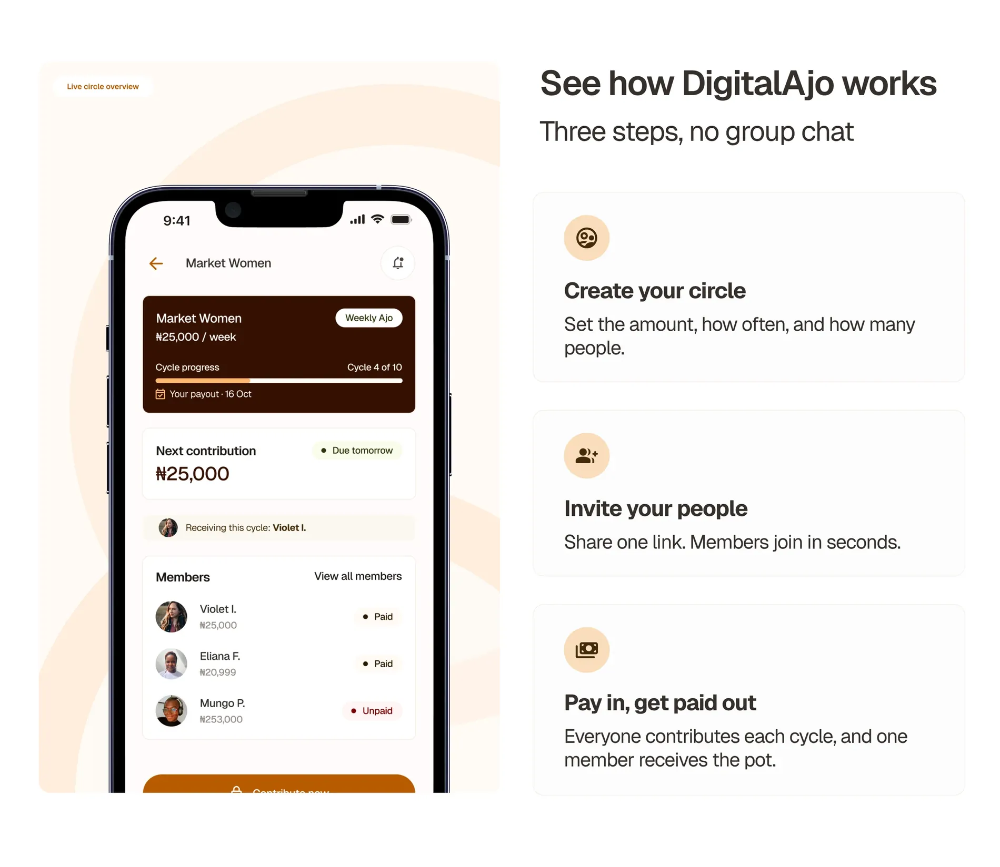
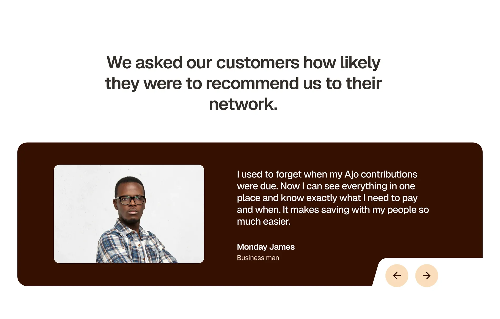
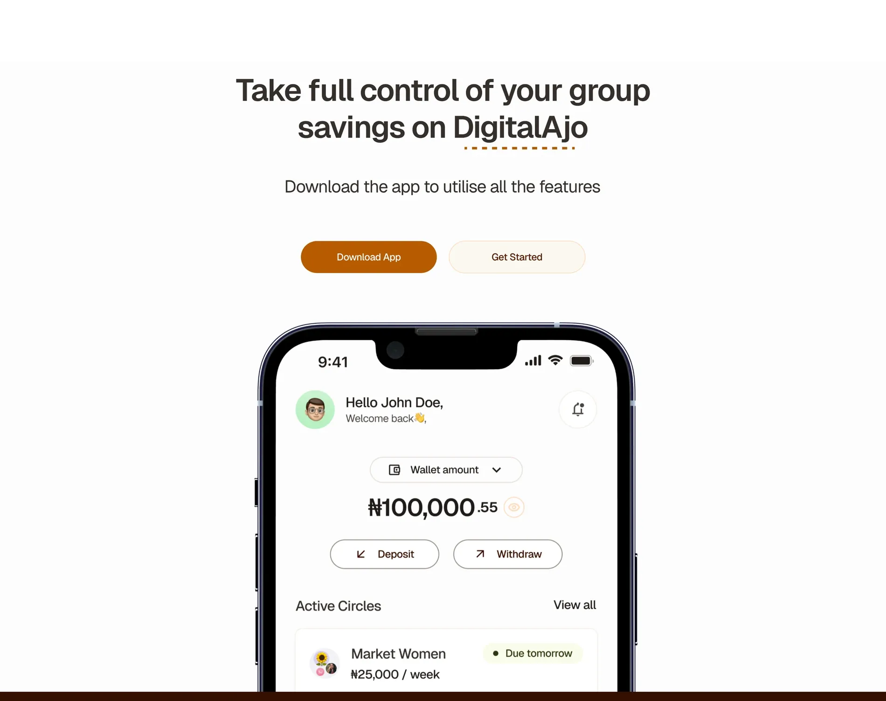
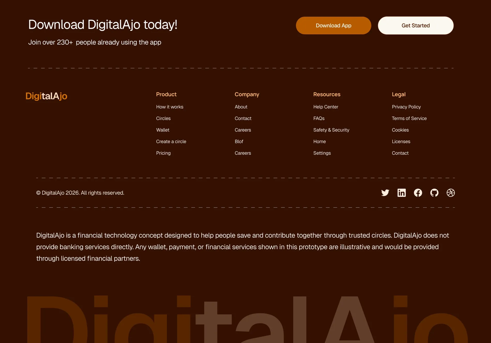
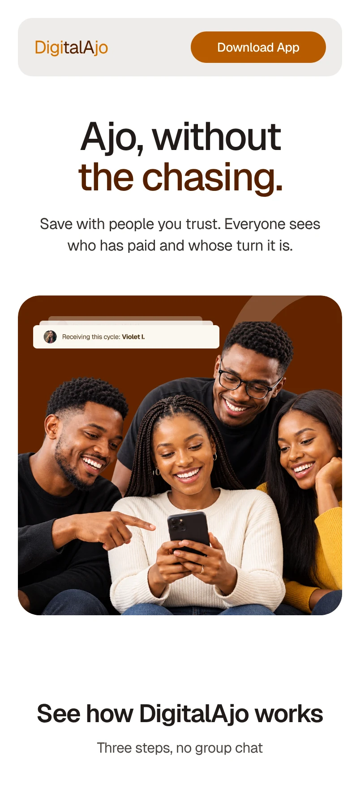
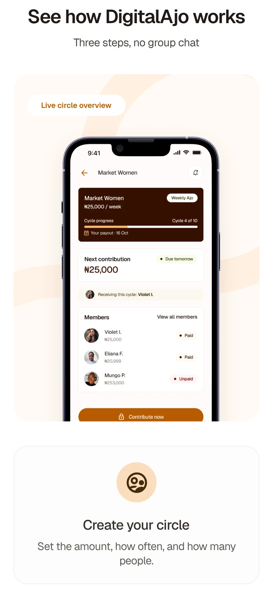
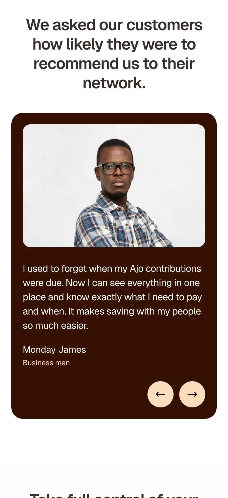
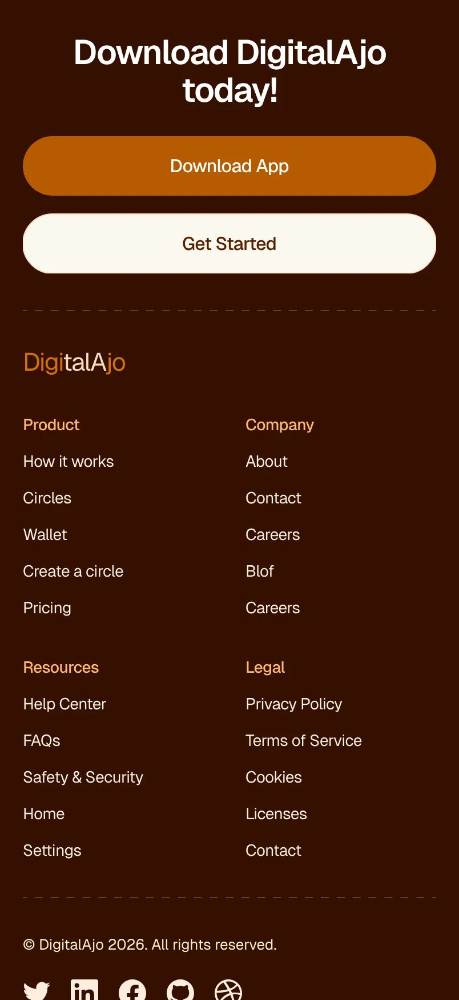

DigitalAjo
Ajo, without the chasing.
A landing page for DigitalAjo, a group savings app concept. In ajo, everyone in a circle pays in and one person receives the pot each cycle. The page explains that simply and shows who has paid and whose turn it is.
- Project
- Landing page
- Product
- Group savings app (concept)
- Design
- Desktop & mobile

Start with
the promise.
The headline names what ajo members know best: chasing people for contributions. Real faces and small floating cards show the answer before anyone scrolls, who is receiving this cycle and who has paid.

Three steps,
no group chat.
How it works sits beside a live circle on a phone: create your circle, invite your people, then pay in and get paid out. The phone shows the same idea in practice, with cycle progress, the next contribution and each member’s status.

Proof from
a member.
One testimonial in a member’s own words, with arrows to read more.

Two ways in.
The closing call to action offers Download App and Get Started, with the app’s home screen to show where people land: their wallet balance and active circles.

A footer that
sets expectations.
Alongside the usual links, the footer says plainly that DigitalAjo is a concept, and that any money would be handled by licensed financial partners.

The same page
on mobile.
On a phone the sections stack in the same order. The headline breaks across two lines, the steps become a single column and the buttons go full width.



